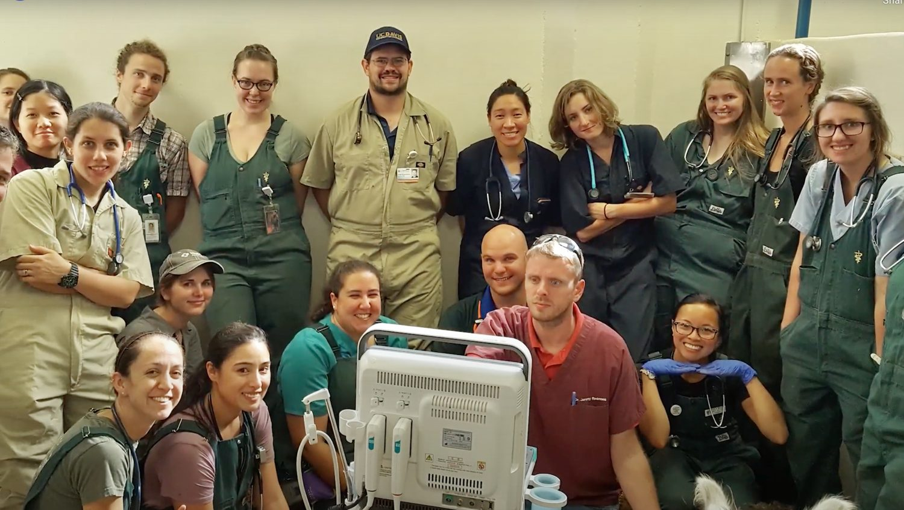
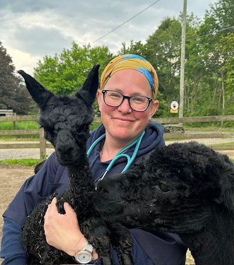
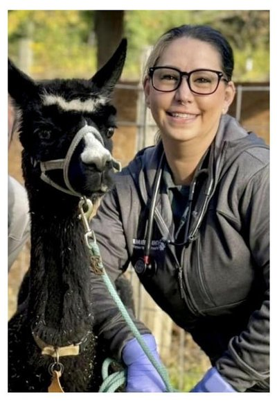
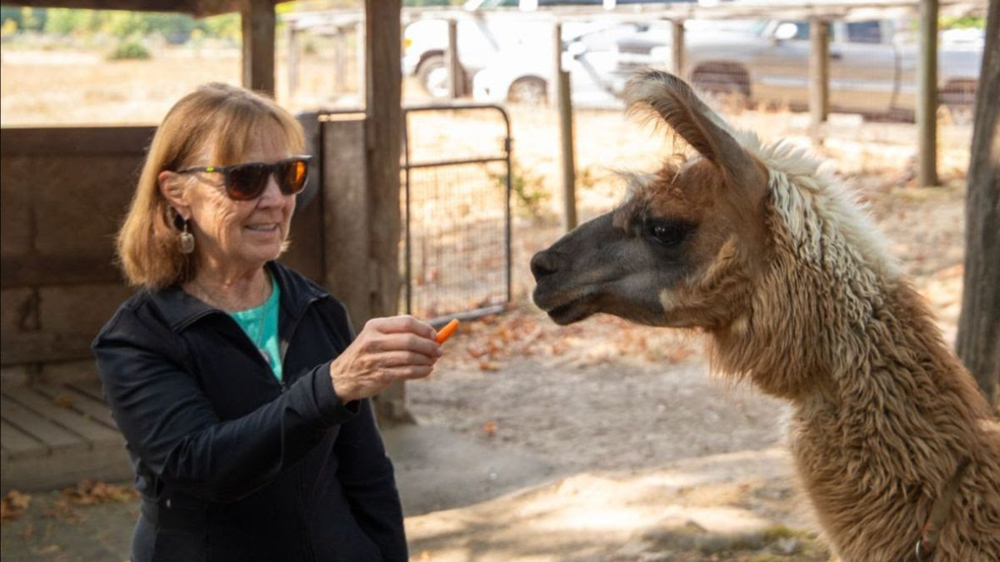
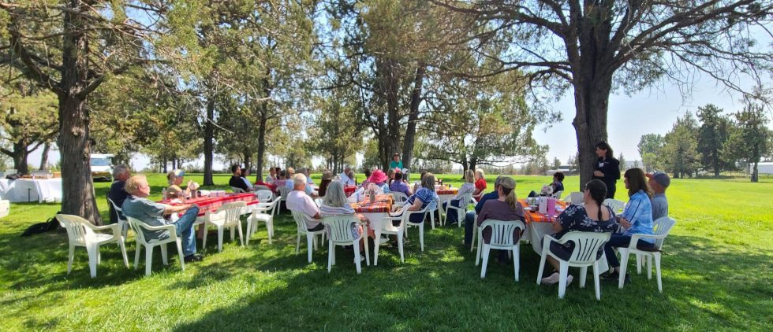

We fund llama and alpaca research at Oregon State University.
The North West Camelid Foundation began in 1986 with owners and breeders who wanted better veterinary care for their animals. The money we raise pays for studies at OSU's Carlson College of Veterinary Medicine, keeps a herd at the university for researchers and students, and funds a yearly scholarship.

What the money has paid for
From 1987 through 2024 the foundation put $700,521 into camelid research. Of that, $553,954 went to individual studies and $146,567 went to feeding and housing the llamas and alpacas that OSU researchers and students work with.
The early grants looked at uterine torsion, rickets and vitamin D, and how llamas process common drugs. These are the most recent:
"I was contacted by the University of Georgia about a sick cria. They tried the dose rate from our NWCF study and saw a fourfold increase in white count in 48 hours."
Dr. Erica McKenzie, large animal medicine, Oregon State University
| Year | Study | Grant |
|---|---|---|
| 2024 | Injectable anesthesia in llamas and alpacas | $6,350 |
| 2024 | A blood test to tell whether a newborn cria got enough antibodies from its mother's first milk | $5,180 |
| 2023 | Normal heart ultrasound measurements for llamas and alpacas, a joint project with the University of Pennsylvania | $20,800 |
| 2023 | Gastritis in llamas and alpacas | $9,845 |
| 2022 | Developing a llama-derived antibody that binds the GLP-1 receptor | $12,000 |
The scholarship
Every year since 1993 the foundation has given a scholarship to a veterinary student with an interest in llamas and alpacas. In 2002 it became a permanent endowment at OSU, and the college's own committee now picks the recipient. Awards so far come to more than $44,000.
All recipients and how the endowment started
-
Henry Laurita
From Hope, Maine. He plans to run a mobile livestock practice back home.
-

Tovah Yenna
A Navy veteran who started vet school at 40. She keeps dairy goats and two llamas.

Why medical researchers want llama antibodies
In 1989 scientists found that llamas, alpacas and other camelids make an antibody that is missing a piece every other mammal's antibodies have. In the lab it can be cut down further into a nanobody, which is small enough to reach places ordinary antibodies can't.
At OSU, Dr. Chris Cebra and his colleagues are making nanobodies aimed at tuberculosis, dengue virus, and cancer proteins in dogs. The foundation's 2022 grant paid for one of these antibody projects.


Where we get together
Most of what we raise comes from one fundraiser a year, usually on a member's farm, with lunch, a silent auction, and an update from the OSU vets. We also hold Meet & Greets for owners and co-sponsor a camelid medicine conference at OSU.
Nothing is scheduled right now. The events page is where new dates will appear.
Picnic at Frog Pond Farm
Near Wilsonville, Oregon
Fundraiser and silent auction
Crescent Moon Ranch, central Oregon
Camelid medicine conference
Oregon State University, Corvallis
Giving
All of the money raised at our fundraisers goes to research and to the OSU herd. NWCF is a 501(c)(3), so gifts are tax deductible.